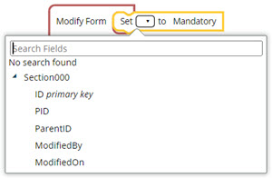
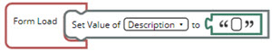

Set
The Set block enables you to update a default value for a field in the current form. This block is available on all events except After Save and Workflow Action Complete. However, the available options in Set block are different for Modify Form event when compared to Load Form and Before Save events.
In the Modify Form event, you can select any of the following Set block options as applicable:
- From the drop-down list of Set Hidden field, you can select the field name that must be hidden or available, and then update the value as true or false in the adjacent field as applicable.
Figure 1. 
- From the drop-down list of Set field, you can select the field name that must be set to read only.
Figure 2. 
- From the drop-down list of Set field, you can select the field name that must be set to mandatory.
Figure 3. 
In the Load Form and Before Save events, from the drop-down list of Set Value of field, you can select the field name for which the default value must be set, and then update the value in the adjacent field.
- If the selected field name is a text box field type, then a text box is created adjacent to the selected field.
Figure 4.  - If the selected field name is a drop-down list with a defined
list of values, then a drop-down list is created adjacent to the selected field.
Figure 5.